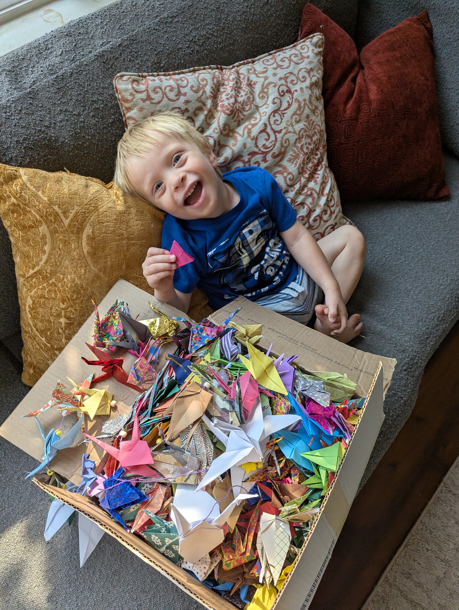
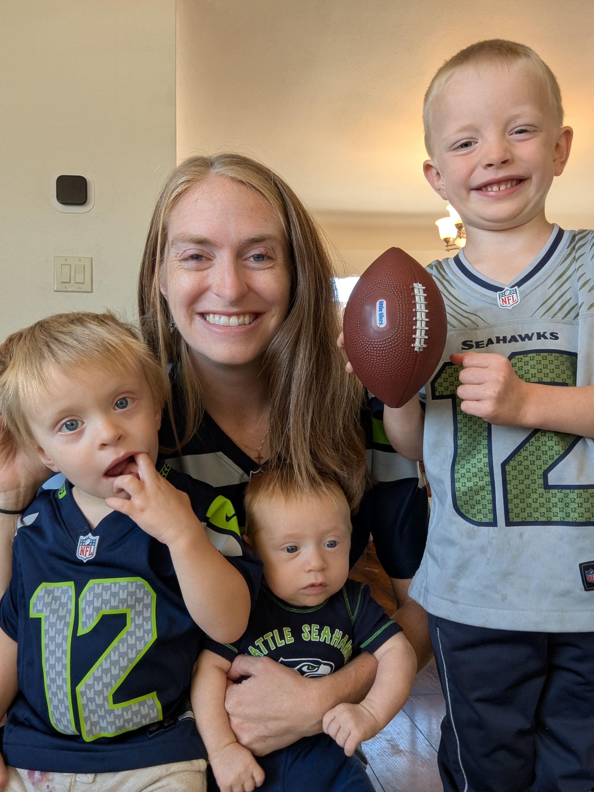

Reflections from Jerusha
September 14, 2026
We find ourselves in an off-week and with not much that has changed in Micaiah's status and demeanor, so we thought that I might jump in to give some insights from my side of things. Spencer is the better writer between the two of us, and I know that this site has served as a great way for him to process everything as well as give everyone updates, but I will snag one of these posts.
Firstly: where we are in the process. We just started round four of chemo last week. Tuesday (tomorrow), we will have labs drawn to check his immunity status in its trajectory of highs and lows and to ensure he doesn't need transfusions. I am grateful and relieved that we have not found ourselves in a situation where transfusions are necessary yet. The next big step is our big eye exam under anesthesia on September 23rd, which will give us an update on how effective the chemo treatments have been, give us another opportunity to perform more direct treatments (like cryotherapy and laser therapy), and give us more insights into the outlook for both eyes/eyesight.
As was true for the last eye exam, I find my nerves building as we approach that date. There is something about being in this in-between time that is easier to deal with. There's nothing that can be done in between treatments, and thankfully Micaiah's demeanor hasn't seemed to have changed much, so it somewhat feels like just maintaining the status quo. Part of our goal, after the initial shock of the diagnosis, was to help make sure this would not be all-encompassing and redefining of their childhood, so while it was somewhat our hope to have this feel as much like a normal childhood as possible, it is still strange to be aware of the gravity of the situation while we are giggling and playing together in the living room, dancing to music in the kitchen, and having typical milestones like new words, potty training, and sizing up in clothes. It's a strange tension to hold as the parents. Approaching the time of the eye exam means we will have some answers, and answers can be good or bad. Putting off knowing sounds so nice. Don't look at it and it will go away. Pretending like I don't see anything… like that game you play with kids… if I close my eyes, I can't see you, so you must not be able to see me. Tempting.
But the answers won't go away. The reality won't go away. So deal with it we will.
I find myself, much of the time, having the scriptures pop into my head like, "For in death there is no remembrance of you; in Sheol who will give you praise?" (Ps. 6:5) "For Sheol does not thank you; death does not praise you; those who go down to the pit do not hope for your faithfulness. The living, the living, he thanks you, as I do this day; the father makes known to the children your faithfulness. The LORD will save me." (Is. 38:18-20a) And, "Or which one of you, if his son asks him for bread, will give him a stone? Or if he asks for a fish, will give him a serpent? If you then, who are evil, know how to give good gifts to your children, how much more will your Father who is in heaven give good things to those who ask him!" (Matt. 7: 9-11)
I know that we have scriptural precedent for almost debating with God and pressing to remind him that glory and praise will be due to him given miraculous grace and salvation. While I know that God can work all things toward good, I remind Him how much more it would speak of his greatness to have full recovery and healing. I know that, regardless of the outcome, it will still be a story I can proclaim God's goodness during, but I ask Him that the full healing would be His Will so that I can proclaim that too.
At the beginning of this journey, in the middle of us reeling from the news breaking, I was most astounded by the quiet assurance I had that "God is Good." It was a phrase that was so clearly solid and unshakable that it almost seemed audible at times. It kept rearing itself up in my day-to-day life, like an intrusive thought, but it was one that was positive and calming. I was living in a time (and still am) where I am holding "This is really hard" and "God is Good" in tandem. Again… tension.
I distinctly remembering being baffled by what the spiritual gift of "faith" was when I first read through those lists as a kid. As time has gone on, however, I have begun to have a quiet appreciation for what I feel I might have in that regard. All throughout the ups and downs of my life (up to and including this), I have blessedly never once doubted the presence or goodness of God. I have had questions of the hows and the whens, but I have felt that quiet reassurance my whole life long. That is not to say I haven't had seasons of life where God has felt far away, but it feels like I am constantly in the eye of a storm. The chaos that surrounds me won't ever touch that core. I suppose this is similar to the distinction between joy and happiness. We, as Christians, have a deep joy that surpasses the temporal nature of happiness. I also know that God gives us a peace that passes all understanding (Phil. 4:7), and I know that partially I have the multitude of prayers from all of you reading this to thank for that. The outpouring of love and support has been reassuring and inspirational: overnight bouquets dropped at our doorstep, meals and gift cards provided, calls and texts checking in, a box of 1,000 paper cranes folded with Bible verses and prayers inside… this is what one could only hope for in the midst of a tragedy, and we feel blessed beyond measure.

Micaiah with his 1,000 cranes
That being said, the stress is still very real. I think the hardest thing for me has been to see what it is doing to Spencer. The stress of the treatments adds on top of the existing stressors of the store and the house, and Spencer seems determined to help tackle them all. I saw a Reel somewhere that said, "How do you manage running a business, having kids, cleaning house, etc… I don't. I take turns neglecting each of them." While comical, that seems to be our reality. We don't have the bandwidth to handle taking care of all of these things at the fullness of what they are owed, and the stress of knowing things are being left undone or neglected eats away at both of us, but I fear it hurts Spencer all the more. He feels the need to take care of things and problem solve everything. He is truly amazing, too. Everything he does, he does extremely well! He learns things and perfects them, whether that be knowing how to order for a grocery delivery at the store, insulating our house for the coming winter, or helping manage a toddler as they are getting their port accessed for chemo treatments.
What's challenging for me is trying to figure out how to lessen his load. We both do a lot, and we're both tired. We have to be okay with not being able to do everything in this season of life. In addition to your prayers for Micaiah, (his eyesight, maintaining his eyeballs, and eradicating the cancer from his body), please pray for us, as well: for our energy levels, and for our prioritization and juggling abilities.
Saturday, Micaiah turns two years old. I was tempted to make the theme some sort of theme about strength or fighting and overcoming obstacles, but we decided on something else… partially because we aren't out of the woods yet and partially because we don't want this cancer to define his childhood. I look forward to the party I will get to throw him when we get the all clear from the doctors at the end of all this… a small seed of motivation in the back of my head. But this (almost) two-year-old is getting some big personality! He definitely seems to be more gregarious than Elias, and his laugh is such a loud belly laugh that makes you want to join in. He seems to like to ham things up to try to make his big brother laugh. We recently did a seating rearrangement at the dinner table where they are sitting opposite of each other now, and I have some regrets, as the direct eye contact between the two of them seems to have increased the silliness during meals tenfold. It's hard, because another tension we hold is needing to train them to engage in correct and polite behavior, while also remembering what it was like to be a kid and thinking, "that is hilarious" as we see the shenanigans that these two hoodlums get up to. They copy each other, egg each other on, and crack themselves up doing so. There is something so sweet when you hear the boys deviously cackling as they jump on their beds together, or something similarly taboo. So typical childhood right now, as far as day-in and day-out is concerned.
Again, I feel so blessed that Micaiah isn't wallowing in misery everyday or during treatments. (That was a fear of mine going into this.) We have had essentially no side effects to speak of… nausea, hair loss, constipation, energy loss (if anything it seems like he has some EXTRA energy), and I am cautiously optimistic that we will continue with that trajectory. He has been eating well and has actually gained weight! Of course, I also have fears that this is lulling me into a false sense of security and then it will all come crashing down soon. But one will drive themselves crazy in the land of "What-ifs," and each day has enough troubles of its own. I will not borrow from tomorrow's. (Matt. 6:34)
So I suppose this post is all about tensions.
The tension of knowing the gravity of the situation, yet playing and having fun.
The tension of living through difficulty, yet affirming God is Good.
The tension of being pulled in multiple directions.
The tension of parenting and molding our kids, yet allowing space for some transgressions and appreciating the memories our kids are forming together.
And the tension of living between treatments and tests.
It's a good thing our God is a God who goes with, who pitches His tent with us, who leads us through the wilderness, and who gives us the unique hope that we have as Christians. Thanks for coming along with us on our journey, for reading this far, and for all the prayers. On to the next step!

Football season has started!